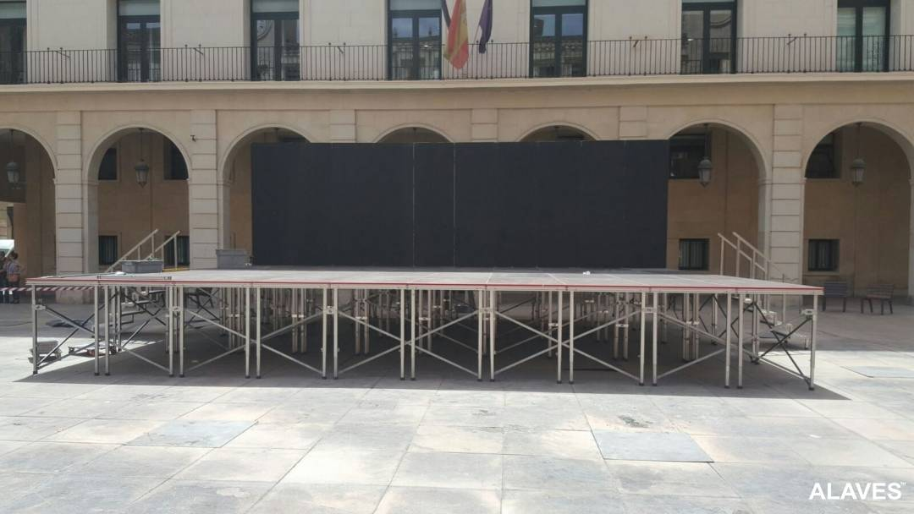
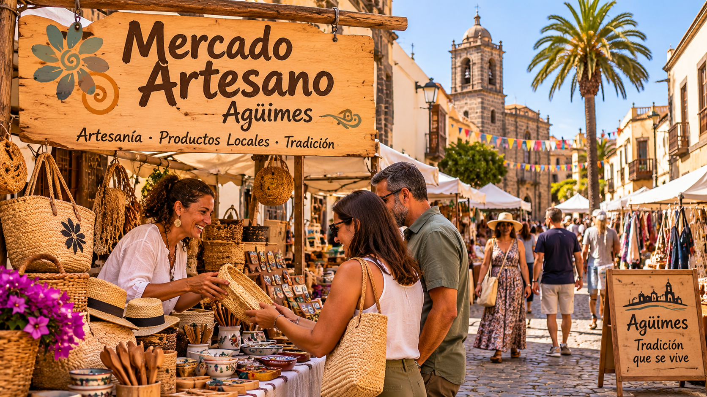

Timple y Marea

Cuarteto que mezcla el sonido del timple con ritmos de folk y pop. Actuará el viernes por la noche.
Estilo
Folk canario con toques modernos.
«Donde el viento canta»
Agüimes, Gran Canaria · del 17 al 19 de julio de 2027
El Festival Alisio Sonoro nace en la villa de Agüimes para celebrar la música, la artesanía y la cultura de las islas bajo el cielo del sureste de Gran Canaria. Durante tres días, el casco histórico se llena de conciertos, talleres y espacios de ocio para todas las edades.
Nuestros objetivos son:

Cuarteto que mezcla el sonido del timple con ritmos de folk y pop. Actuará el viernes por la noche.
Folk canario con toques modernos.

Aprende a tocar tambores y chácaras con músicos locales. No hace falta experiencia previa.

Recorrido guiado por puestos de cerámica, cestería y queso, con degustaciones de productos de la isla.
| Hora | Actividad | Escenario o lugar | Duración |
|---|---|---|---|
| 10:00 | Taller de percusión tradicional | Casa de la Cultura | 90 min |
| 12:00 | Ruta de artesanía y gastronomía | Casco histórico | 120 min |
| 14:00 | Comida popular | Plaza de Agüimes | 90 min |
| 17:00 | Cuentacuentos canarios | Parque municipal | 45 min |
| 19:00 | Concierto de Timple y Marea | Escenario principal | 75 min |
| 21:30 | Sesión DJ bajo las estrellas | Escenario secundario | 120 min |
Más información en la web del Ayuntamiento de Agüimes y en el portal de turismo de Gran Canaria.
Solicita tu participación en una actividad. Los campos marcados con * son obligatorios.
El formulario recoge tu nombre, correo electrónico, teléfono (opcional), preferencias y comentarios. Estos datos se utilizarán únicamente para gestionar tu solicitud de participación y contactar contigo. No se cederán a terceros y puedes pedir su eliminación en cualquier momento.